在电脑上获取自己的绑定凭证，再填入宿舍码。下方截图已遮挡敏感信息，可点击图片放大查看。
先准备好
- 一台 Windows 电脑，安装电脑微信并登录自己的账号。
- 从 Fiddler Classic 官网下载安装抓包工具。
- 关闭无关网页和应用，减少无关请求与账号信息。
1. 开启 HTTPS 抓包
打开 Tools → Options → HTTPS，勾选 Decrypt HTTPS traffic。确认提示来自自己安装的 Fiddler 后，按提示信任它的抓包证书，再保存设置。
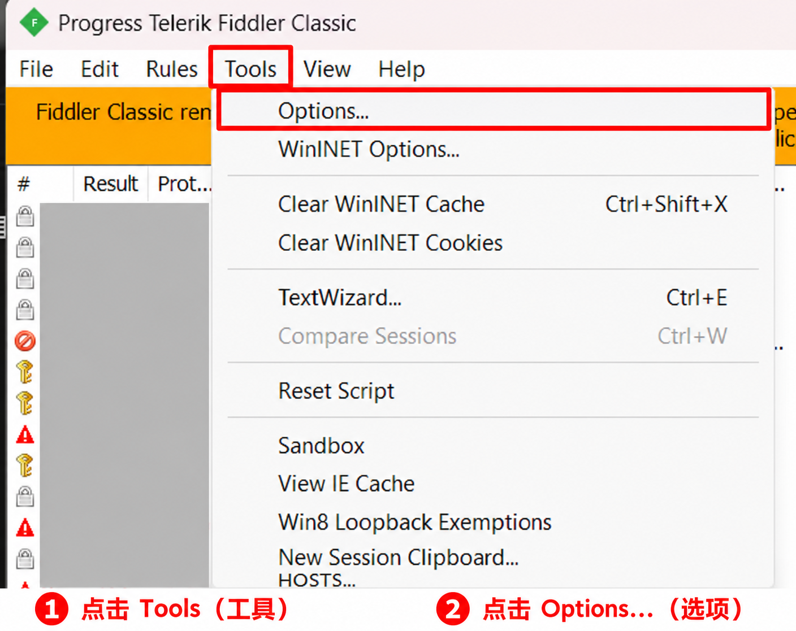
点击 Tools → Options 打开设置（点击图片放大）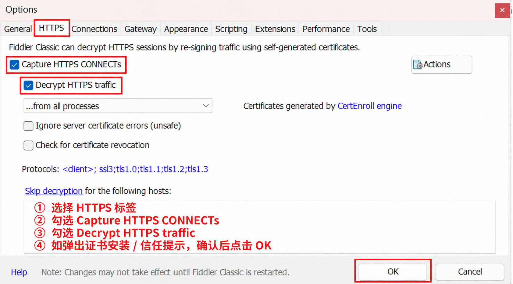
选择 HTTPS，勾选两项抓包选项后保存（点击图片放大）
2. 记录一次自己的登录
在 Fiddler 的“文件”菜单确认 Capture Traffic（捕获请求）已勾选。按 Ctrl＋X 清空旧记录；关闭并重新打开电脑微信里的慧湖通，进入“我的”，再打开通行码。
记录出现后取消勾选 Capture Traffic，或按 F12 停止抓包。停止后，已有记录仍可查看。
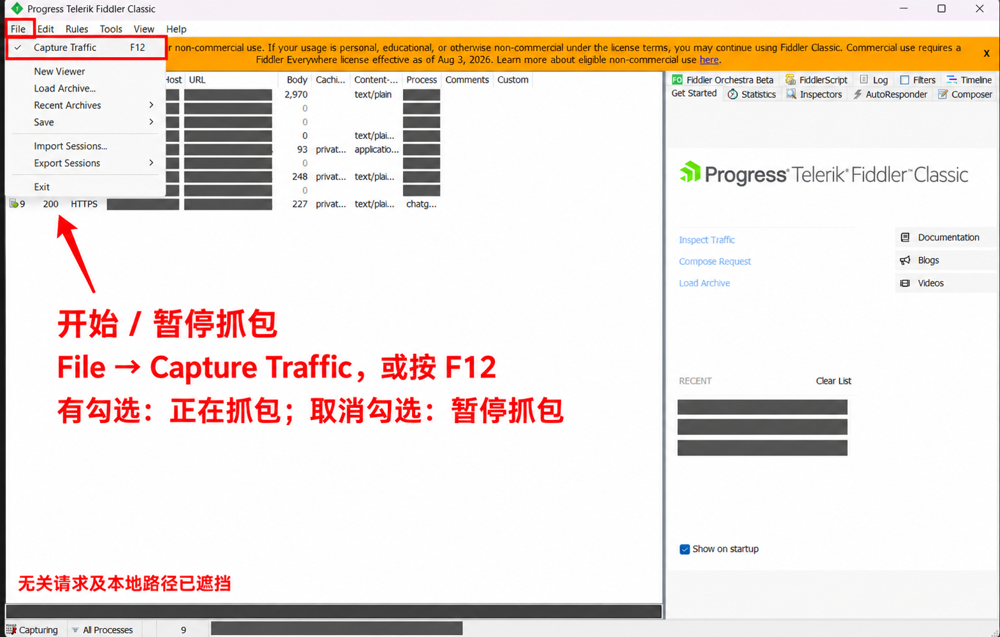
File → Capture Traffic，或按 F12 开始 / 暂停抓包（点击图片放大）
获取 OpenId 优先使用
3. 找到慧湖通登录请求
在左侧列表中找 Host 为 api.215123.cn、URL 包含 certificateLogin 的记录。也可以按 Ctrl＋F 搜索接口名称。找到后双击这一行，右侧才会显示请求详情。
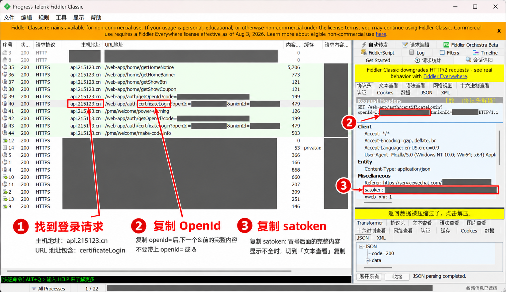
识别主机地址和 certificateLogin，双击请求后复制 OpenId 或 satoken（点击图片放大）Fiddler 请求列表（示意）
HostURL
api.215123.cn/web-app/auth/certificateLogin?…
api.215123.cn/pms/welcome/make-code-info
4. 复制地址中的 OpenId
双击找到的这一条请求，右侧会显示请求详情。打开右侧 Inspectors → 上半部分 Headers 查看完整请求地址。复制 openId= 后面、下一个 & 前面的值；没有 & 时复制到参数值末尾。
/certificateLogin?
openId=你的 OpenId（示意）
&unionId=已隐藏
只复制高亮处的值，不带 openId=，不带 &unionId=。5. 回到宿舍码绑定
将值填入 OpenId 输入框，点击“验证并绑定”。验证成功后会显示通行码，请核对姓名是否属于自己。
OpenId 也不是永久有效保证它用于识别你在慧湖通中的微信身份，不是学号、手机号或微信号。账号解绑、身份关联变化或接口调整，可能导致重新登录失败。不要公开你的 OpenId。
获取 satoken 备用方式
satoken 是慧湖通登录令牌，不能使用 AMS 令牌或个人中心的 ACCESS-TOKEN 替代。
6. 复制请求头中的 satoken
双击找到的 certificateLogin 请求，在右侧上半部分找到 satoken:，复制冒号后面的完整内容。显示不全时，切到 TextView（文本查看） 再复制。
7. 切换为令牌绑定
回到绑定页，展开“其他绑定方式”，点击“改用登录令牌”，粘贴 satoken 后验证。
令牌可能过期，需要重新获取关闭 App 后保留令牌，不代表服务器永久认可它。具体有效期和续期规则尚未确认，不承诺使用天数。失效后，仅有 satoken 时需要重新登录慧湖通并抓取新令牌；OpenId 方式则可尝试重新取得令牌。持续取码不等于一定会续期。
完成后的检查
- 确认 Fiddler 已停止捕获，并退出工具。
- 不再需要 HTTPS 解密时，可在 HTTPS 设置中关闭；若要移除抓包证书，使用 Fiddler 的 Actions 菜单中对应的证书移除项，并核对是 Fiddler 证书。
- 完整抓包文件也可能包含验证码、身份和令牌。不要公开分享，妥善处理不再需要的记录。
如果找不到登录请求，先确认 HTTPS 解密已开启、微信小程序已重新打开。不要为了取凭证解绑现有账号，也不要猜测接口参数。
使用 Mac 微信获取自己的慧湖通绑定凭证。截图中的隐私信息已遮盖；请勿分享自己的凭证或完整抓包记录。
Proxyman 官方下载
1. 跳过代理助手安装
打开 https://proxyman.com/，下载 macOS 版，安装并打开 Proxyman。
打开 Mac 微信，登录自己的账号；关闭无关网页和应用，减少无关请求。
出现“安装代理助手工具”弹窗时，点击左上角 × 关闭即可。
助手仅帮助设置和恢复系统代理；本教程先跳过，遇到代理设置问题再安装。
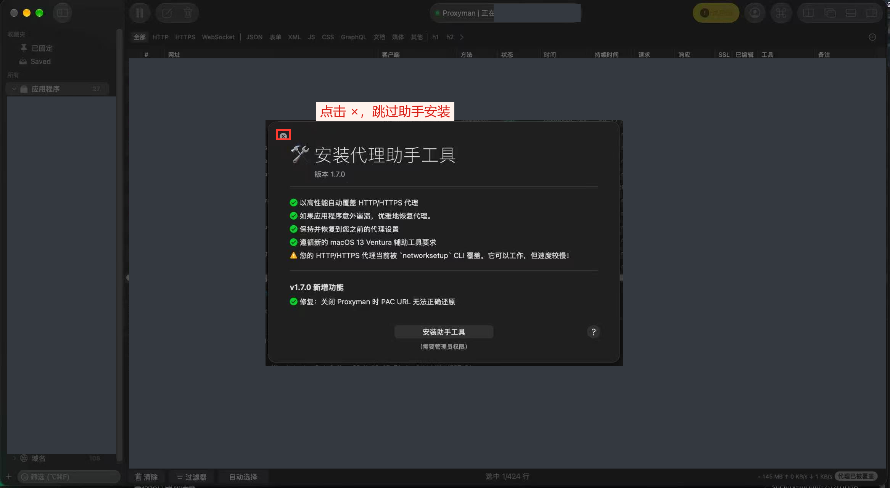
点击截图可放大查看。深灰色区域为隐私遮盖。
2. 关闭欢迎窗口
不需要选择 iOS Device 或模拟器。
点击底部“关闭（ESC）”，进入主界面。
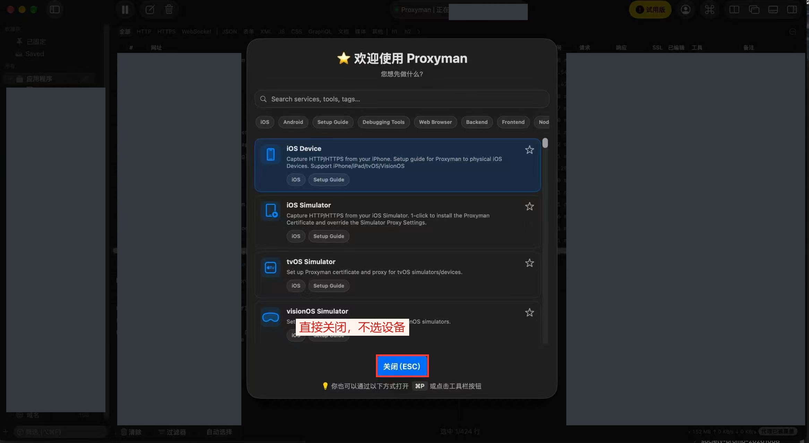
点击截图可放大查看。深灰色区域为隐私遮盖。
3. 打开慧湖通并筛选请求
在 Mac 微信中打开慧湖通，进入“我的”及通行码。
点击底部“过滤器”，设置 URL → 包含 → api.215123.cn。
过滤栏选择“URL”，条件选择“包含”，输入 api.215123.cn，并保持左侧勾选。
截图此时尚未打开过滤栏：红框标出底部入口，下一张展示填写后的结果。
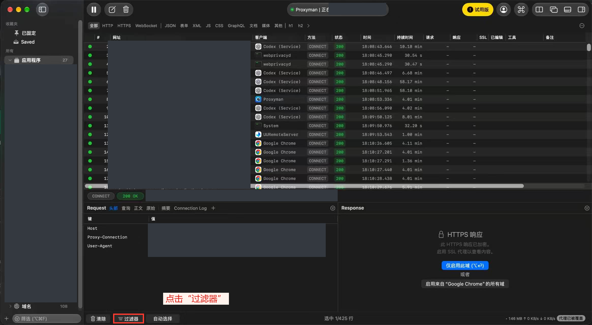
点击截图可放大查看。深灰色区域为隐私遮盖。
4. 仅解密慧湖通域名
选中 api.215123.cn 的请求，点击右侧蓝色“仅启用此域”。
CONNECT 仅表示连接已捕获；还不能查看 OpenId 或令牌。
不要选择“启用来自微信的所有域”，只启用 api.215123.cn 即可。
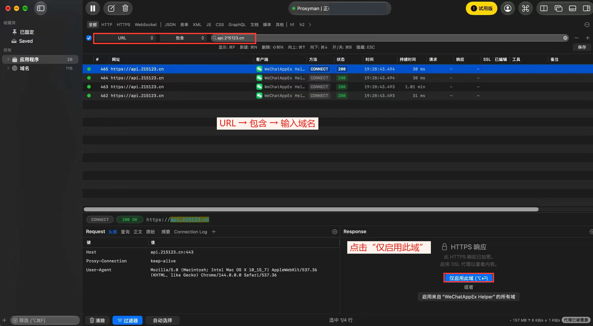
点击截图可放大查看。深灰色区域为隐私遮盖。
5. 安装并信任 HTTPS 证书
在“自动”页点击“安装并信任”，按系统提示输入 Mac 管理员密码。
此证书是查看 HTTPS 内容所必需的，与第一步代理助手不同。
确认这是自己安装的 Proxyman 发出的证书提示，再授权；密码不需要发给任何人。
若未弹出设置指南，可从 Certificate 菜单打开 Install Certificate on this Mac。
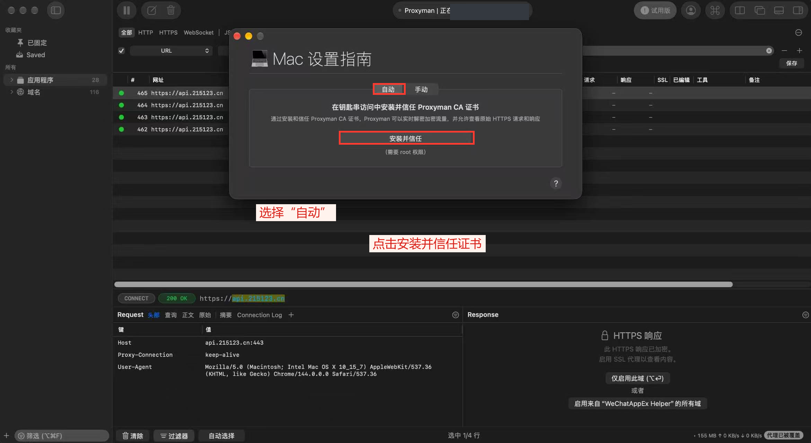
点击截图可放大查看。深灰色区域为隐私遮盖。
6. 找到登录请求并复制 OpenId
关闭并重新打开慧湖通；必要时完全退出微信后重新打开。
选中 URL 含 certificateLogin 的请求，在下方查看完整地址。
复制 openId= 后、下一个 & 前的值，不带 openId= 或 unionId。
也可点 Request 的“查询”查看参数；回 AMS 粘贴 OpenId 并验证绑定。
示例：certificateLogin?openId=你的值&unionId=其他值，只复制“你的值”。
不要复制整条链接，也不要把 getOpenId 请求中的 code 当作 OpenId。
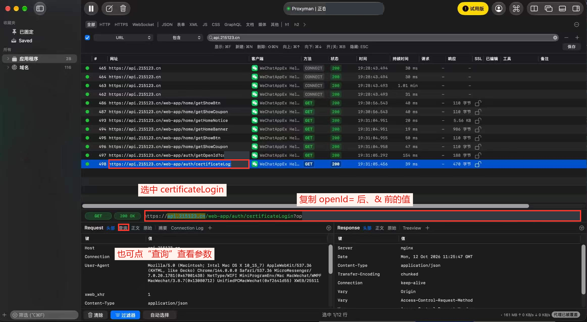
点击截图可放大查看。深灰色区域为隐私遮盖。
7. 备用：复制 satoken
在 Request →“头部”向下滚动，找到 satoken。
复制右侧完整值，不带 satoken 字段名，不要遗漏换行显示的部分。
回 AMS →“其他绑定方式”→“改用登录令牌”，粘贴后验证。
OpenId 与 satoken 二选一；令牌失效后需要重新获取。
satoken 是慧湖通令牌，不能用 AMS 的令牌或其他 ACCESS-TOKEN 替代。
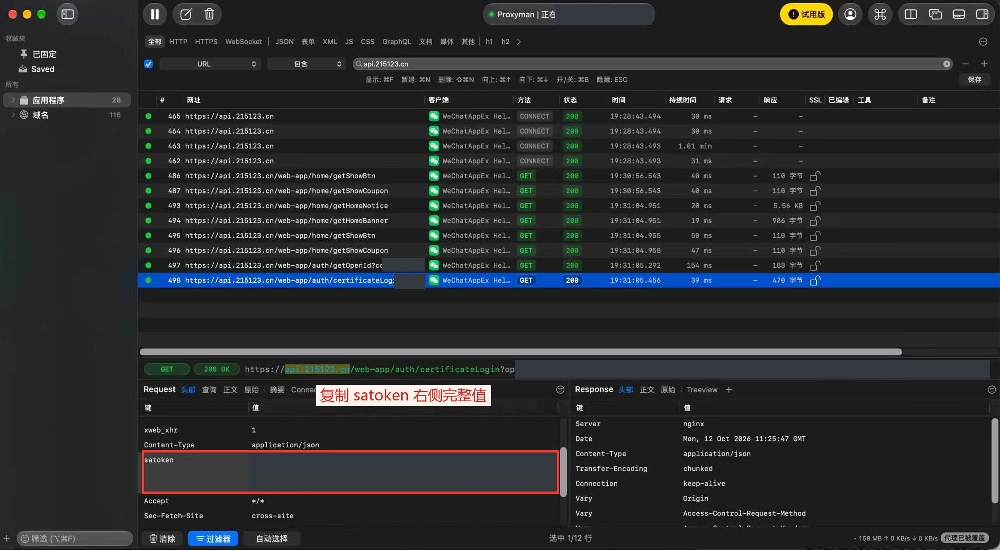
点击截图可放大查看。深灰色区域为隐私遮盖。
完成后
获取后点击左上角暂停按钮停止抓包，并退出 Proxyman。
不再使用时，在钥匙串访问中移除本工具的 Proxyman CA 证书。
若退出后网络异常，检查系统网络代理是否恢复原设置。
找不到请求：确认正在捕获、域名过滤正确，并重新打开慧湖通。
只有 CONNECT：确认已信任证书、开启此域 SSL 解密，再产生新请求。
绑定失败：检查是否只复制参数值、是否复制完整，令牌失效时重新获取。
截图显示已捕获并解密登录请求；不代表 AMS 绑定或宿舍闸机已验收。
AMS 为学生独立开发的非学校官方应用。